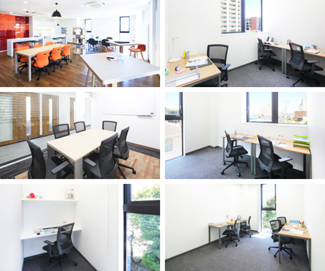

【個室レンタルオフィス】
オープンオフィス刈谷
オープンオフィス刈谷がNEW OPEN
愛知県刈谷市は県の中央の位置し、自動車工業を中心に発展を遂げる日本を代表する自動車工業都市になります。
豊田自動織機、デンソー、トヨタ紡織、トヨタ車体、アイシン精機、愛知製鋼、ジェイテクトなど、トヨタグループの主要企業の本社・工場がこの刈谷市に集まっております。
オープンオフィス刈谷が提供するオフィスサービス
-
 高速インターネット＜光ファイバー＞
高速インターネット＜光ファイバー＞
- 100Mbpsの光ファイバーによるブロードバンド環境をご用意しました。各部屋に配線済みですので、パソコンに繋げばすぐLAN経由で高速インターネットを利用出来ます。
-
 ネットワーク・カラーレーザープリンタ+スキャナー
ネットワーク・カラーレーザープリンタ+スキャナー
- ネットワークを利用して、各お部屋のパソコンから印刷できます。プリンタをご用意いただく必要もございません。
スキャナー機能も搭載しております。
-
 カラーレーザーコピー
カラーレーザーコピー
- フロア内にご用意してあります。カード方式でコピーが出来ますので、小銭の準備が不要です。
-
 ICカードキーによる入室管理
ICカードキーによる入室管理
- 専用ICカードを使ったホテル式のスマートシステムを用いて、セキュリティーを向上させています。
-
 ミーティングルーム（会議室）
ミーティングルーム（会議室）
- 商談・会議にご利用いただける共有スペースをご用意しています。インターネットで簡単に予約をしていただけます。
-
 無線LAN（WiFi）
無線LAN（WiFi）
- 共有スペースとミーティングスペースにて、無線LAN(WiFi)サービスをご利用いただけます。

オープンオフィス刈谷の特徴

トヨタ発祥の地
トヨタグループ主要企業が集約
名古屋や愛知県内からのアクセスが良い
2017年5月竣工の最新オフィス
24時間利用可能。貴社の働き方にも柔軟に対応
24時間利用可能
オフィス周辺のMap
オープンオフィス刈谷近隣のスポット
- ■銀行
- 三井住友銀行 刈谷支店
百五銀行 刈谷支店
知多信用金庫 刈谷支店
十六銀行 刈谷支店
愛知銀行 刈谷支店
西尾信用金庫 刈谷支店 - ■レストラン
- こなす （すき焼き）
カフェゴーサンブランチ （イタリアン）
OHANA （和食レストラン）
クインチ （イタリアン）
や台ずし （寿司） - ■ホテル
- 名鉄イン刈谷
アクセスイン刈谷
ホテル東洋イン刈谷
コンフォートホテル刈谷
パークホテル刈谷 - ■レジャー
- コナミスポーツクラブ刈谷
- ■映画館
- 刈谷ハイウェイオアシス
オープンオフィス刈谷の住所・アクセス
- 住所:
- 愛知県刈谷市若松町3-9 YF BLDG 3F
- 空港からのアクセス:
- 中部国際空港から「刈谷駅」までリムジンバスで約40分
中部国際空港から名鉄で金山駅経由、JR東海道本線で「刈谷駅」まで約40分 - 電車からのアクセス:
- JR東海道本線・名鉄三河線「刈谷駅」南口から徒歩3分
- お車でのアクセス:
- 刈谷駅南口、刈谷駅南口東交差点を南へ約150m進み、刈谷保健所手前を右折し50ｍ進んだ左側
オープンオフィス刈谷のフロアマップ
3F

※フロア内は禁煙です。
※こちらはイメージ図となりますので、状況が異なる場合は現況を優先させていただきます。
- ◆初回納入金
- 利用料1ヶ月分の保証金
- ◆共益費
- 水道光熱費、ビル共益費、ゴミ出し、フロア・トイレの清掃、共有部分の消耗品代を含みます。
リージャスグループの説明
リージャス・グループは、柔軟なワークスペースを提供する世界最大の企業です。そのネットワークは世界120カ国1,100都市、3300拠点に及びます。会員数は250万人で、業界で成功を収める大小様々な企業や起業家の方々にご利用いただいています。
リージャスは、個室タイプのレンタルオフィス、コワーキングスペースなど多彩なオフィスプラン、近年需要が高まるモバイルワークやバーチャルオフィス、障害復旧サービスの提供を通じ、お客様が予算やワークスタイルに合わせて仕事を行うことができる環境を提供いたします。